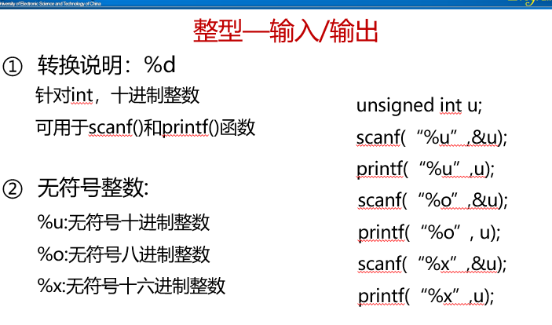
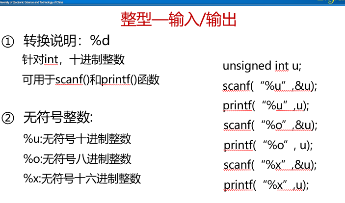
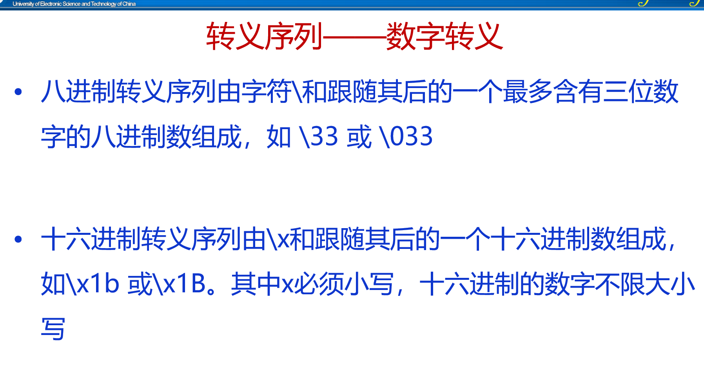

7.基本数据类型
7.1.整型

short表示长度也就是大小比较小的数字，long则相反，signed表示有符号(正负号)的数字，unsigned表示无符号数字，数字默认是有符号的
 


7.2.浮点型

float用于精度没那么高的数，double 用于精度更高的数，long double 用于精度更高的数，但没那么常用。单精度32位，双精度(double)64位，浮点数以科学计数法存储，每一个数都由符号，指数和小数三部分组成，符号占一个比特，指数部分占8个比特，小数部位占23位，当要用到小数时，要确定小数的精度，如果想要精度更高的话，则需在声明变量时用doubl 变量名 的格式
浮点型常量
小数形式；必须有小数点，如3.14 -12.5等
指数形式：数字 e(E) 指数部分 如3.14e-3 2.57e8 等
浮点型常量通常以double类型存放，如果想以单精度存放，则在数字后加F或f，如果想以long double 类型存放，则在数字后加L或l

7.3.字符型
用char声明变量，赋值时要给值加上单引号，当计算机中出现字符时，C语言只是使用它对应的整数值
char的类型：signed char 有符号的char 表示范围-128~127;unsigned char 表示范围0~255
a.转义序列
分为两种，一种是字符转义，就是平常用的\n \a(响铃) 这种，但它的局限性在于它并没有把所有不可打印的字符涵盖进去

另一种是数字转义序列,可以涵盖所有的不可打印的字符
b.读写字符
scanf
注意，scanf函数读取字符时不会跳过空白字符
getchar和putchar

注意两个单独，putchar输出单独一个字符，getchar读取单独一个字符，且getchar读取时不会跳过空白
一些运用：getchar可以直接用于控制循环的表达式中，如遇到空格时循环终止，则代码可以是while(getchar()!='');getchar也可用于在循环中搜寻字符，也可用于跳过不确定数量的相同字符或空格
7.4.类型转换

a.隐式转换
算术转换：常用算术转换常用于二元运算符的操作数上；
转换规则：较低级转向较高级，即所谓的提升；
若任一数据类型是浮点型，则把数据类型都转换为数据中存在的最高精度的浮点型；float< double< long double
若所有数据类型均不为浮点数，则把所有的数据类型转换为数据中存在的最高精度整数类型；int< unsigned int< long int< unsigned long int
赋值中的类型转换规则：把赋值运算符右侧表达式的值转换为左侧变量的类型
注意：浮点数赋值给整型变量会去掉该数的小数部分；若表达式的值超出了变量类型的范围，则会得到预期以外的结果；如果将一个浮点常量赋值给一个float变量，最好在改常量后加一个后缀f
b.强制类型转换
表示类型：(类型)变量或(类型)(表达式)
7.5.类型定义
类型定义用于对另一个数据类型创建一个别名
语法规则：typedef type declaration; type就是int float 等，declaration就是别名，自己取的
注意：一个类型定义声明并没有创建一个新的类型，仅仅是对某个已有的类型增加一个新名称而已
类型定义可以使代码更容易理解，当对数据类型定义后，在后面的代码中就可以使用别名来代替数据类型，如创建两个变量表示身高，一般用法 float a，b； 但当我们 typedef float height; 之后，我们就可以这样 height a,b; 效果一样，但比前面的那种更好理解； 类型定义还可以使修改数据的类型更加容易，如我们先 typedef int number; 这时的number是int，但当int的位数不够时，我们则需要修改数据类型，就可以直接把int 改成更高精度的int，如 unsigned int , long int
7.6.sizeof运算符
sizeof是取数据类型、常量、变量或者表达式值的存储长度的运算符(以字节为单位)； 语法规则：sizeof(数据类型说明符/表达式)；如sizeof(int),sizeof(i+j)
8.数组
8.1.一维数组
数组是含有多个数据值的数据结构，每个数据值具有相同的数据类型；这些数据值被称为元素；数组内可以根据元素所处的位置对其进行单独访问；简而言之，数组是相同性质的一组数据的组合，数组元素的数据类型相同，个数确定.
声明一个数组：类型定义符 数组名[常量表达式]，常量表达式是数组元素的个数,元素索引从0开始
8.2.数组的初始化
数组可在声明时赋值，获得一个初始值，格式为 数据类型定义 arr[数组元素个数]{数组元素，用逗号隔开}，若赋的数组元素少于[]中的数量，则少的数字默认为0
指定初始化式：一个数组里面只有几个数要赋值，其他都为0，则可采用指定初始化赋值，格式为 数据类型定义 arr[数组元素个数]{[n]=元素，[i]=元素，[j]=元素，...}，表示数组内的第n+1，i+1.j+1个元素自己定义，其他全为0
小技巧：用数组的大小除以数组元素的大小可以得到数组的长度 sizeof(a) / sizeof(a[0]) sizeof是获取数组的字节总数，用字节总数除单个元素的字节长度，即可得到数组的长度，这个经常用到。但sizeof返回的是无符号整型，无符号整型和有符号整型比较是很危险的，所以我们要将 sizeof(a) / sizeof(a[0]) 强制转换为有符号整数，格式为 (int)(sizeof(a) / sizeof(a[0]))
8.3.二维数组


二维数组按照行主序存储数组，从第0行开始顺序存储，接着第一行，如此下去
8.4.字符数组
注意：用字符串常量初始化时，自动加结束标志\0
字符数组的输入输出

二维字符数组，和二维数组用法规则一样
一些相关知识
注意：字符串拷贝函数会将数组二的内容替换数组一的内容,空字符为'\0'

9.函数
9.1.函数的定义和调用
9.1.1函数构造
格式
每个形式参数需要说明其类型；形式参数间用逗号进行分隔。 如果函数没有形式参数，那么在圆括号内应该出现void，或者什么都不写
函数体内声明的变量专属于此函数，其他函数不能对这些变量进行检查或修改。
9.2.2函数调用
Tips：1.如果函数有参数，那么调用时实际参数前不能加类型 2.调用时函数前也不能加返回类型
9.2.函数声明和实际参数
9.2.1.函数声明
当函数构造在函数调用之后时，编译器第一次遇到函数调用时，会自动给函数一个隐式声明，定义函数的数据类型，当后面遇到函数构造时则会报错，所以函数构造要在函数调用之前，但这不现实，所以因此有了函数声明，它可以让编译器先对函数有个初步的了解，当后面遇到函数构造时才不会报错
格式：返回类型 函数名 ( 形式参数 ) ;
9.2.2.实际参数
函数在被调用时要给出实际参数，实际参数将值复制给形参，自身的值不会受到函数内部的影响
9.2.2.1.实际参数的转换

9.2.2.2.数组型实际参数
1.数组可以作为函数的参数，当形式参数是一维数组时，可以不说明数组的长度 2.在把数组名传递给函数时，不要在数组名的后边放置方括号 3.改变数组形参就能改变数组实参 4.如果形式参数是多维数组，则只有第一维的长度可以省略
9.3.函数返回和程序终止
9.3.1.函数返回
函数在完成的时候，需要返回到调用它的地方，这时需要用到return语句
格式如下：return [表达式];
tips：1.表达式是可选的，只有非void返回类型的函数必须有，否则就不应该有。2.如果表达式的类型和函数的返回类型不匹配，那么系统将会把表达式的类型隐式转换成返回类型；3.在void返回类型的函数中，如果return语句是最后一条，那么这条return语句是可以忽略的
9.3.2.程序终止
在main函数中执行return会终止程序
exit函数
9.4.函数递归
在特殊的场合，一个函数可以自己调用自己，那么此函数就是递归的，如计算某个数的阶乘，或某种行为多次重复运用
10.程序结构和变量作用域
10.1局部变量
在函数体内声明的变量称为该函数的局部变量